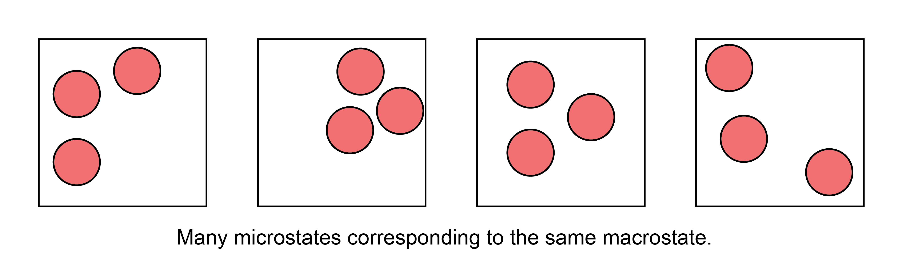

Postulates of statistical mechanics#
Additional Readings for the Enthusiast#
McQuarrie [2], Chapter 1, Chapter 2.1
Chandler [1], Chapter 3.1 - 3.2
Goals for today’s lecture#
What is a macrostate? A microstate? An ensemble?
Why would the degeneracy of an ensemble be important?
What are important conditions to ensure the time-average is equivalent to the ensemble-average?
How does the definition of entropy we discuss differ from the classic “entropy is disorder” description?
Macrostates and Microstates#
Recall that our goal in statistical mechanics is to develop a mathematical framework that allows us to calculate the macroscopic, thermodynamic properties of a system from a description of the properties of individual molecules. For example, we might try to derive the value of a given thermodynamic property such as the temperature or pressure from the knowledge of the quantum mechanical energy levels available to a system with \(N\) particles. We will take the first steps toward accomplishing that goal in this lecture.
Imagine a system composed of a single-component gas enclosed within a sealed, rigid, insulated container. The walls of the container therefore prevent a change in the number of particles (\(N\)), the volume (\(V\)), or the energy (\(E\)) of the gas; the system is isolated. Equivalently, we could describe the system in terms of what macroscopic thermodynamic parameters are constant - this gas is defined as having constant \(NVE\), where these particular variables are constant due to the constraints imposed by the walls, as opposed to being constant due to a condition of equilibrium.
At the macroscale, these three parameters define the system - if I were to characterize the gas with no knowledge of the existence of individual gas particles, I would characterize it strictly in terms of the values of \(N\), \(V\), and \(E\). We therefore define the
- macrostate#
the meta-state of a system corresponding to a specific value of all non-fixed paramters
where here, our macrostate corresponds to particular values of \(NVE\) that describe the current state of the gas. However, we know that at the microscale there are an enormous number of particle configurations that can fulfill these requirements. For example, assume that the gas is ideal and therefore the only contribution to the internal energy is the kinetic energy of each particle. Even if the total internal energy (i.e., the sum of the kinetic energy of each particle) is a constant value, there are an enormous number of ways that we could arrange particle positions in space that would still have the same internal energy, since the kinetic energy does not depend on particle positions.
If we were to take a snapshot of the gas at a particular instant in time and record the positions of all \(N\) particles, we would define a
- microstate#
one particular configuration out of the enormous set of configurations of particle positions that have the same macroscopic values of \(N\), \(V\), and \(E\)
There are thus many, many microstates that are compatible with a given macrostate. Oftentimes, authors will interchangably use the term “state” to mean “microstate,” which can be a bit confusing, but should be apparent from context.

Given this definition of a microstate, we can then define the concept of an ensemble of microstates. An ensemble is a mental collection of all possible unique microstates that are consistent with a specific macrostate; each member of the ensemble is considered identical macroscopically, but unique microscopically.
We will discuss four primary ensembles in this course that are given names reflecting the choice of thermodynamic variables that are held constant.
- microcanonical ensemble#
The ensemble for which all microstates have a fixed number of particles, volume, and internal energy. Also known as the $\(NVE\)$ ensemble.
- canonical ensemble#
The ensemble for which all microstates have a fixed number of particles, volume, and temperature. Also known as the $\(NVT\)$ ensemble.
- grand canonical ensemble#
The ensemble for which all microstates have a fixed chemical potential, volume, and temperature. Also known as the $\(\mu VT\)$ ensemble.
- isothermal-isobaric ensemble#
The ensemble for which all microstates have a fixed number of particles, pressure, and temperature. Also known as the $\(NPT\)$ ensemble.
Many more ensembles are possible based on different thermodynamic constraints. There are a couple of caveats to note. First, note that each microstate of an ensemble will also have thermodynamic parameters that are not fixed, and can vary with each microstate. For example, we can define an instantaneous energy, \(E_i\), for the \(i\)th microstate in the canonical ensemble, and this energy will generally vary between microstates. Also note that in several of these ensembles parameters are fixed not due to the walls of the system but rather due to conditions of equilibrium, a point that we will return to in the next lecture.
- degeneracy#
the number of microstates in an ensemble written as \(\Omega(N,V,E)\)
In the degeneracy, the parentheses indicate the fixed variables in the corresponding ensemble, so this is the degeneracy of a microcanonical ensemble; the degeneracy of a canonical ensemble would be written as \(\Omega(N,V,T)\).
Here, we assume that the energy of a system is a discrete quantity such that the number of states can be counted explicitly. Systems for which the energy is nearly continuous are better described by a related concept called the
- density of states#
the number of states with an energy within a small interval \(E+dE\), written as \(\omega(N,V,E)\)
We will largely deal with the degeneracy as our chosen quantity for most of this class. Other terms are often used to describe the degeneracy of an ensemble - for example, the microstates in an ensemble are often called the “phase space” of a system so that the degeneracy would be the “extent of phase space.”
Having defined an ensemble of microstates as a collection of thermodynamically identical but microscopically distinct configurations of a system, we can now define two fundamental postulates of statistical mechanics.
Postulate 1: The time-average value of a thermodynamic parameter, Y, of a system is equal to the ensemble-average value of Y.#
- ensemble average#
the value of a parameter averaged across all microstates of a statistical ensemble, weighted by the probability that the system is in each microstate

We can formulate the first postulate mathematically by defining the time average:
and the ensemble average
and noting that our observed quantity \( Y_\textrm{obs} = \langle Y \rangle \equiv Y_{time} \equiv Y_{ens}. \)
Equation (12) defines the time-average value of \(Y\), where this is the value of \(Y_\textrm{obs}\) that I would observe if I were to measure the parameter experimentally (assuming a typical macroscopic measurement); in other words, this would be the volume/pressure/etc. of the macrostate. Equation (13) defines the ensemble-average value of \(Y\), written as \(\langle Y \rangle\). The sum runs over the entire ensemble of microstates where \(Y_i\) is the value of \(Y\) in microstate \(i\), and \(p_i\) is the probability that the system is in microstate \(i\) (such that \(\sum_i^\textrm{microstates} p_i = 1\)). This postulate is the foundation of statistical mechanics!
This postulate, also called the ergodic hypothesis, illustrates the connection between statistical mechanics and thermodynamics by linking the macroscopic (observed) value of a thermodynamic variable to an average across a large number of particle configurations.
We can picture this connection by again imagining a gas. Assume that the gas were allowed to exchange energy with the environment, such that it maintains a constant temperature but its energy can fluctuate. If we were to observe this gas for a long period of time and periodically take snapshots of molecular configurations, each snapshot by definition would be a microstate in the canonical (\(NVT\)) ensemble, and we could calculate the value of some non-fixed thermodynamic variable \(Y\) for each microstate (e.g., the energy or the pressure).
As time progresses, we record more and more configurations of the system - we say that the system samples microstates. Some microstates may be sampled more often than others, and therefore we could record identical values of \(Y\) multiple times. If we waited a sufficiently long amount of time, the system would sample each microstate \(i\) according to the corresponding probability \(p_i\). Therefore, the time-average value of \(Y\) would be equivalent to taking the average of all the values I recorded - that is, the time-average value would be equivalent to the ensemble-average value according to the ergodic hypothesis.
The Caveats#
There are two critical aspects of this postulate that relate to the observation time, \(\tau\).
First, the properties of the system cannot change with time during the period of observation; that is, the system must be at equilibrium.
Second, the observation time, \(\tau\), must be very long so that the system properly samples a representative number of microstates. “Very long” is obviously a qualitative statement; the relevant timescale to compare to is the autocorrelation time of the observable of interest. If we imagine placing the system in a single microstate and then observe the positions and energies of all particles as a function of time, the relevant autocorrelation time would be the time necessary for the system to reach a new microstate such that particle positions/energies are not correlated with the previously recorded positions/energies (we will return to this point in Unit 2 of this class). Autocorrelation times are generally very small - for example, the autocorrelation time for particle positions in a gas is on the order of picoseconds, so any macroscopic observation time will be sufficiently long to observe a representative set of microstates from the ensemble. However, some systems may have long autocorrelation times (e.g., glasses) and therefore may not sample a representative number of states during an expermient; such systems would then be non-ergodic.
Because the ergodic hypothesis tells us that ensemble averages can be related to macroscopic thermodynamic parameters, all of the rules of thermodynamics that you have learned and that we covered in the preceding lecture can be applied to ensemble-average parameters. For example, from the fundamental relation in the energy representation we can show:
These rules have been derived assuming some macrostate with values \(E\), \(S\), \(V\), and \(T\). However, the ergodic hypothesis now tells us that we can relate macroscopic parameters to microscopic parameters. For example, for an ensemble in which \(V\) and \(T\) are fixed and \(E\) is allowed to vary, I could equivalently write:
Note that I have not commented on the entropy, \(S\), which we will return to in Postulate 2.
Equation (13) writes the ensemble average in terms of a summation over discrete microstates, with each microstate occurring in the ensemble with probability \(p_i\). In principle, however, we do not know the values of \(p_i\). The second postulate addresses this point.
Postulate 2: In the microcanonical ensemble, all microstates are equally probable.#
This postulate, also referred to as the principle of equal a priori probabilities, states that each value of \(p_i\) is equivalent in Equation (13) for microstates in the microcanonical ensemble, as there is no a priori reason to assign different probabilities. Using the definition of the degeneracy, \(\Omega(N,V,E)\), from earlier, this postulate defines
Note that we can define a degeneracy for any ensemble (e.g., \(\Omega(N,V,T)\) as the degeneracy of the canonical ensemble), but Postulate 2 only applies to the microcanonical ensemble.
In combination, the two postulates state that if an isolated system is observed for a long period of time, all possible microstates of the system will be visited with equal probability and the time-average value of a thermodynamic property will be equivalent to the average of that quantity across all microstates. As an aside, it is likely that there will always be some uncertainty in the measurement of \(E\) due to the quantum properties of a system (i.e., due to the Heisenberg uncertainty principle); however, this small uncertainty is effectively inconsequential.
“Postulate 3”: The Boltzmann entropy#
We will close this discussion of the microcanonical ensemble with a third “postulate” that will be stated here (although it can be derived from future results). Specifically, we define the entropy for the microcanonical ensemble, \(S\), as:
where \(k_B = 1.381 \times 10^{-23}\) J/K is Boltzmann’s constant. This definition is also referred to as the Boltzmann entropy to distinguish from an alternative (but equivalent) definition given by Gibbs that will be discussed later.
The entropy as defined is an extensive variable, as we know from thermodynamics, because in general the degeneracy of an ensemble will increase with system size.
The entropy is also a property of the ensemble itself, unlike other thermodynamic variables such as the pressure which can be given a specific value for each microstate - in other words, we cannot write \(S_i\) as the entropy of a particular state.
Conceptually, this microscopic definition of the entropy agrees with the concept of entropy as a measure of the “uncertainty” of a system, as is often described in thermodynamics. Here, we quantify uncertainty using the number of equivalent microstates - we can imagine that for a gas, there are a much larger number of ways of repositioning particles to yield equivalent macroscopic properties than for a solid, so it’s harder to guess which one we’re really looking at. Alternatively, we can think of the entropy as quantifying the volume of the phase space accessible to a system. Regardless of how you think of it, this definition of entropy provides another connection between the microscopic features of a system (i.e., the degeneracy or number of accessible microstates) and macroscopic thermodynamic parameters.
- 1
David Chandler. Introduction to Modern Statistical Mechanics. Oxford University Press, New York, 1st edition edition, September 1987. ISBN 978-0-19-504277-1. URL: http://pcossgroup.xmu.edu.cn/old/users/xlu/group/courses/apc/imsm_chandler.pdf.
- 2
Donald A. McQuarrie. Statistical mechanics. University Science Books, Sausalito, Calif, 2000. ISBN 978-1-891389-15-3. URL: https://vuquangnguyen2016.files.wordpress.com/2017/12/339279795-donald-a-mcquarrie-statistical-mechanics-bookzz-org.pdf.